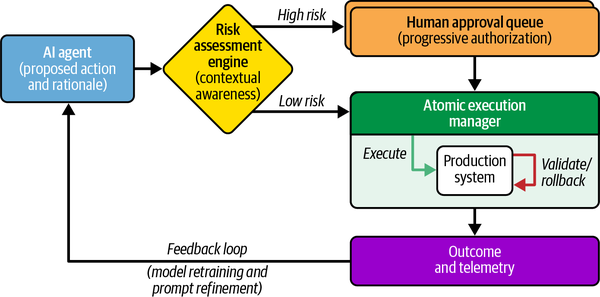
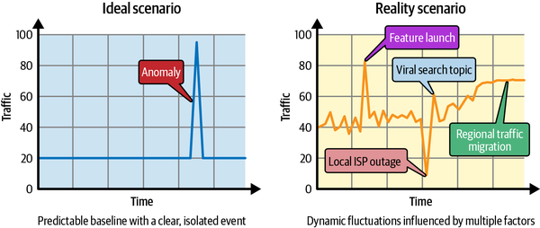
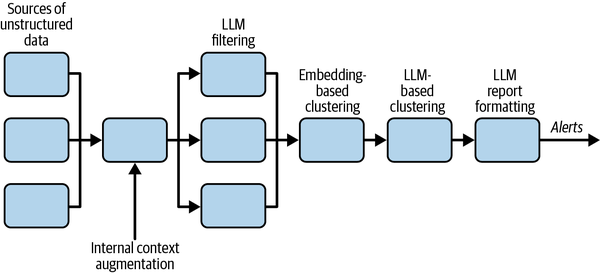
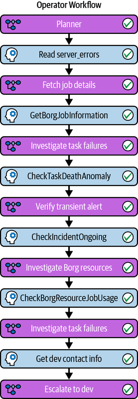
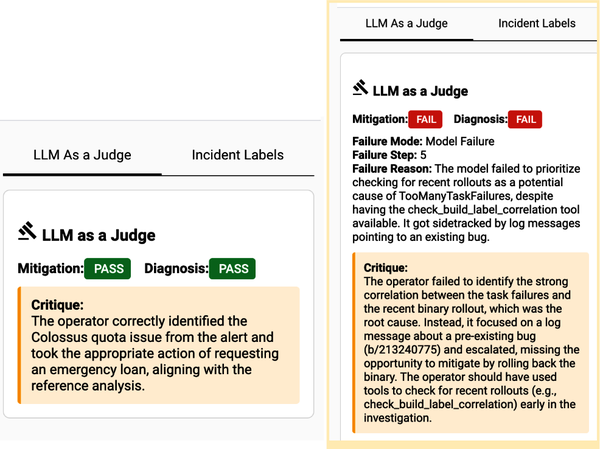

将 AI 融入站点可靠性工程（SRE），从根本上改变了我们设计、运维和构建生产系统的方式。然而，讨论 AI 在 SRE 中的应用有一个独特难题：一切变化得太快，我们很难断言今天写下的内容今后仍然成立。
撰写本章时，许多组织报告称，新代码中由 AI 编写的比例正不断上升，智能体也开始自主完成复杂的故障排查流程。一年前，AI 代码生成虽有帮助，却仍需大量人工交互；两年前，语言模型以智能体方式调用工具还既不可靠又很脆弱。未来一年，AI 的能力与部署很可能再度大幅跃升，使今天针对某种工具编写的具体指南或操作说明在几个月内就过时。
因此，本章虽然会介绍当前的工具，但会把重点放在 AI 优先方法中经得起时间考验的原则上。SRE 组织若要持续发挥作用，就必须优先寻找 AI 能力与业务问题真正匹配的机会，并调整团队组织方式，以适应这些能力的不断演进。
要理解如何把 AI 应用于 SRE，首先必须认识到系统正在承受的新压力。微服务架构对团队和基础设施的规模化发挥了关键作用，但也带来了代价：组件之间的交互复杂度呈指数级增长。现代服务横跨广阔的地理拓扑、形形色色的硬件，以及日益繁复的监管环境。理解这些系统所需的巨大认知负担，本身已经成为一种可靠性风险。
更快的变化速度又加剧了这种复杂性。业务需求长期推动着持续不断的更新，而 AI 驱动开发的出现从根本上改变了局面。开发者如今能以前所未有的速度交付大得多的系统变更。这种速度是一把双刃剑：功能交付越快，故障发生率也可能越高。我们正把规模更大、节奏更快的变更推入本就难以理解的系统。
脚本、运行手册和简单逻辑等传统自动化非常适合执行已知任务，但也十分脆弱。面对复杂分布式系统中新颖且实际上具有非确定性的故障模式时，它们经常失效。AI 为穿越这种复杂性提供了一条路径：它能够处理非结构化信号、推断意图，并在没有僵化规则的情况下应对复杂拓扑。
然而，这种能力伴随着根本性的权衡。脚本要么成功，要么以明确的错误码失败；AI 的运行则具有概率性。它依据置信区间和最优推测行事，而不是沿确定性的执行树运行。把这种概率性引入大规模、高速运行的生产环境，也就引入了概率性故障被大规模放大的风险。在人类交互的规模下，含糊的流程通常会在出现一两次明确错误后被察觉并拦截；而 AI 可以把交互扩展到整个生产环境，即使只有 1% 的错误率，也可能很快造成灾难性影响。因此，我们不能只是在现有流程上简单叠加 AI。面对如此巨大的变化，必须从根本上重塑可靠性方法，并优先推动团队文化转型，以管理这类新风险。许多组织需要从追求可验证正确性的文化，转向能够接受非确定性、在质量与安全区间内稳健运行的文化。
实验承担着发现和验证的作用。组织应安排专门力量判断当前 AI 能力是否适合眼前需求，并通过实验加以验证。这个团队要探索模型和智能体能力的最前沿，目标是快速失败，并及时识别某项能力刚刚达到可用水平的时刻。按当前 AI 与模型能力的演进速度，今天失败的实验几个月后就可能成功，因此实验结论应视为阶段性的，而非最终定论。
实验结束后，组织必须判断成果是否已适合生产化并扩大部署。如果值得推广，就需要严谨的工程工作：构建防护机制、评估流水线，并接入现有基础设施，把实验成果加固成生产级可靠性工具。还必须持续验证和监控其行为与影响，因为 AI 能力可能以动态且不均衡的方式进步。例如，更强的模型在驱动既有流程时，可能在生产环境中执行比预期更多的操作；若缺少有效验证与监控，就可能产生不良后果。
最后，快速变化还需要赋能与变革管理。AI 优先转型会带来显著的人力与组织摩擦，因此必须专门投入培训和文化建设。既要重塑习惯确定性系统的资深工程师的直觉，也要提升初级工程师的能力——他们或许从未在没有 AI 助手的情况下处置过事件。
我们的 AI 战略以第 1 章介绍的生产健康层级为框架。无论 AI 进步多快、变化来得多急，这个层级都会优先保障始终不变的基础要素。下文将沿着这一层级探讨 AI 在 SRE 中的应用：
在部署 AI 智能体管理生产环境之前，必须先建立治理、安全和文化框架，让人们能够信任由此产生的变更，并有条件提出改进建议。
我们不再止步于简单监控，而是借助 AI 在噪声中识别意图与影响，获得深入理解。
系统发生故障时，AI 会成为事件管理、缓解和复盘学习的协作伙伴。
我们通过标准化接口、自适应发布工程和消除琐事，构建稳健的运行环境。
借助 AI 增强的设计与测试，从一开始就把可靠性内建于产品。
最终目标是让系统默认可靠，并通过自主化减少人工干预。
要让人类信任 AI 并推动其改进，关键的第一步是建立真正的心理安全：营造无责备环境，使工程师能够并愿意在充分了解风险的前提下尝试突破生产系统的能力边界。
这种转型依赖正向反馈循环：当我们从确定性自动化转向概率性的生产管理时，强健的无责备文化就成为成功的前提。组织必须避免在安全与治理措施尚不充分时，机械地强制采用 AI；否则既会损害信任，也会破坏这些实践的长期可持续性。
随着 AI 成为可靠且可规模化地自动执行领域专家传统工作流程的首选方式，担忧自然随之而来。工程师会担心 AI 是否将取代自己、能否达到人类的可靠性基准，以及在重大故障期间能否信任非确定性架构。这些担忧是面对激烈变革的自然反应，因为它正在挑战数十年来形成的可靠性最佳实践。现有工作流程是基于对人工介入的特定假设设计的，而 AI 往往会使这些假设失效。要落实如此深刻的变化，仅有技术演进并不够，还需要社会技术层面的变革管理。
在当前的早期阶段，前沿模型仍在快速演进和改进，人类未来会扮演什么角色存在很大不确定性，也引发了广泛讨论：从“人在回路中”到“人在回路之上”，人类最终会完全退出回路吗？
基于历史经验，我们的判断是：AI 不会取代 SRE 领域中的人，恰恰相反。人类拥有深厚的领域知识，更重要的是判断力；AI 则以机器级响应速度和全天候覆盖来增强这些能力。我们已经看到，得到 AI 洞察辅助的领域专家比单独工作的同事更快发现问题、诊断更准确、修复也更彻底。此外，过去因成本过高而不值得开展的工作，例如大规模迁移或广泛的代码重构，如今也开始变得可行，只需 AI 时代之前的一小部分成本，就能获得规模化收益。
当前，生产系统专业人才供不应求。AI 辅助让更多工程师能够承担生产职责，从而缓解这一缺口。它帮助初级工程师把最佳实践融入日常工作，成为加速培养人才的工具，而不是威胁。相应的代价是，AI 又增加了一层抽象，使工程师进一步远离机器层面的实际情况。AI 与 GUI、基础设施即代码（IaC）等以往行业转型有根本区别：它不仅发展更快，影响也不限于某一种实践或某个行业；AI 的采用及其引发的变化正在迅速扩散到所有知识型领域。
我们预计会出现类似经济学中杰文斯悖论的现象：技术提高某种资源的使用效率后，该资源的总消耗量不降反升。AI 已初步展现出降低单项服务可靠性成本的潜力，因此组织不太可能削减人员。相反，它们很可能通过两种方式消化效率收益：一是承接为这些服务提供动力所需的计算和数据中心资源增长，二是要求更广泛的服务组合达到更高可靠性。无论哪种方式，SRE 工作的总范围都会扩大。
不过，SRE 的角色本身会发生显著变化。自这一学科诞生以来，SRE 始终致力于自动化单调、重复的工作。AI 能够大幅削减这类琐事，让工程师专注于更有创造性的职责：构架、设计和加固生产级系统，而不只是维持其运行。这使 SRE 更接近其终极目标——构建默认可靠的系统。人类在关键任务运维中仍不可或缺，但不会再以执行静态运行手册为主，而会主要在专业知识和判断力具有决定作用的关键节点介入。这些由人主导的交互会被记录，并纳入模型训练和后续迭代，使 AI 与人类判断更加一致。通过这个交互循环，工程师与 AI 系统都能持续改进。
把 AI 智能体引入生产环境，会从根本上改变系统的风险结构。传统软件执行确定性逻辑，而 AI 智能体具有一定程度的非确定性和自主性。将其用于生产管理的首要难题，是缺少安全的执行环境。在软件开发中，编码智能体可以在本地代码库里安全地犯错，最坏结果通常只是构建失败；但在生产环境中，智能体面对的是真实用户流量、实际收入和关键数据。若它误把健康集群判断为故障集群并将其流量排空，就会立刻造成切实的服务中断。
巨大的交互量会进一步放大这种风险。随着 AI 加速软件开发，进入生产环境的变更量预计会暴增，甚至可能比现在高出几个数量级。我们已经看到，团队中的 SRE 依靠现有流程很难跟上这种变化速度。为此，SRE 如今不得不在生产环境中使用 AI，才能跟上开发环节中 AI 带来的速度。因而，这些生产智能体的安全性至关重要。
要让 AI 获得生产访问权限，需要建立以三大支柱为基础的安全架构：透明度、情境感知和渐进式授权。
这三项支柱并非凭空产生，而是既有 SRE 实践的延伸。例如，可以把 AI 的安全边界直接绑定到错误预算。当某项服务的错误预算耗尽时，安全架构可以自动把 AI 从自主执行降级为“人在回路中”的顾问角色，直至预算恢复。
实施这种架构时，团队应首先落实基础控制：严格按照最小权限原则控制 AI 智能体的访问权限，并提供模拟执行审计能力。只有这些从第一天就必须具备的控制措施得到验证后，才应叠加复杂的动态异常检测和自动缓解能力。
要让 AI 智能体获得生产访问权限，首先必须确保它透明。智能体不能只执行缓解操作，还必须说明推理过程、所依据的信号和置信度，使人工操作人员能实时核验其“为什么”采取该操作。其次，智能体必须具备情境感知。同一条命令在周二上午客户流量较低时可能很安全，在流量高峰期却可能造成灾难。因此，执行任何操作之前，都必须结合部署冻结、错误预算、正在进行的事件等周边情境，开展实时风险评估。
最后，我们采用渐进式授权。不会在第一天就授予智能体 root 权限，而要让它逐步赢得信任。智能体通常先以只读权限诊断问题，不能改变系统状态；只有在评估流水线和实际使用中持续取得成功后，才逐步升级为提出操作供人审批，最终在低风险任务上自主执行。这种分级方式可降低智能体自主权超出已验证能力的风险，并确保其错误及人类施加的纠正都反馈到持续改进流程中。
这套动态评估系统把 AI 的表现视为服务可靠性问题。AI 的有用性和准确性可以使用标准 SLO 跟踪。例如，AI 智能体可设定“缓解建议延迟”SLO；违反安全约束则会消耗“AI 错误预算”，一旦超出预算，就暂停自主操作。
即使智能体已经成熟，人类的绝对控制权仍不可或缺。我们需要紧急切断机制；一旦智能体出现异常行为，便可立即阻断其生产环境访问权限。实践表明，如果工程师能够迅速叫停正在执行或计划执行的操作，就更有信心、也更有心理安全感地与智能体协作。
更重要的是，我们引入可逆操作原则：除非智能体知道如何撤销某项生产操作，否则不得执行它。若智能体为修复延迟而推送配置变更，就必须立即在适当且考虑情境的时间窗口内监测结果。计入正常预热时间后，如果服务仍未达到预期健康阈值，智能体必须自主触发反向操作，恢复先前状态。操作、验证和可能的回滚被视为一个事务：要么完整成功，要么全部撤销。可逆操作虽然是 SRE 的基础原则，但在实践中，尤其放眼整个行业，回滚仍未得到普遍采用；危机中依赖“向前修复”往往才是常态。颇具悖论意味的是，AI 智能体反而成为最终落实严格可逆性的推动力：智能体不具备人类在向前修复场景中安全应变所需的直觉，因此自动且有保证的回滚就成为硬性要求。1
这些安全机制是否可靠，完全取决于底层技术基础的质量。智能体的能力上限取决于它所感知的数据。因此，我们必须确保它能高保真地访问系统拓扑、依赖关系图、服务生命周期事件和历史事件数据。这通常通过实时检索增强生成（RAG）平台实现，让智能体在采取操作时掌握世界的即时状态。此外，智能体必须通过简洁、标准化的接口与外部环境交互。工具应通过模型上下文协议（MCP）等协议开放，使智能体能够以确定性的方式调用基础设施 API。随着系统走向多智能体架构，还需要标准化的智能体间（A2A）通信协议，让专用智能体无需人工中介即可同通用智能体协调。如何编排这些智能体集合——可靠地启动、监控和连接它们——将成为一项必须解决的核心基础设施挑战，只有这样才能安全地规模化运行。
归根结底，我们必须闭合从运行到改进的反馈回路。保障可靠性要求我们超越静态测试套件，转向动态评估系统，从安全性、有用性和准确性等方面评估智能体。传统服务会用可用性 SLO（例如 99.9% 正常运行时间）和错误预算控制部署速度；同样，AI 智能体也应设置有用性 SLO（例如 95% 的建议获人类采纳）和安全性 SLO。这些 AI 评估信号必须纳入既有可靠性框架。例如，AI 智能体耗尽安全错误预算后，应自动从自主执行降级回“人在回路中”模式，像处理其他服务降级一样处理 AI 影响评估。图 21-1 所示的反馈回路使我们能够重新训练模型、优化提示词，帮助智能体在每次协助处置事件后变得更智能、更安全。

建立这些安全架构和反馈回路后，我们便具备了让人类信任相关变更所需的心理安全和持续改进机制。只有在此基础上，才能利用这些智能体，更深入地感知复杂系统的当前状况。
安全基础就绪后，层级中的下一步是弄清楚正在发生什么。AI 从根本上改变了我们感知系统的方式，使我们能够从指标走向含义。AI 并不取代传统可观测性信号，而是综合这些信号，关联彼此分散的数据流，提供高层语义情境和可操作洞察。
事件检测历来依靠成熟的遥测数据——指标、日志和追踪——来识别生产问题。这些方法虽然必不可少，却常常看不到新颖、细微或刚刚显现的问题，也难以发现主要表现为用户感知异常、而非可观测性信号明显偏离的问题。AI 出现之前的检测系统通常覆盖过宽，或仅针对已知故障模式；告警逻辑则在产品生命周期中被动累积。这种策略难以扩展，因为人类不可能在每一种新故障模式发生前都预见到它。
而且，你测量的并不总是客户实际经历的情况。若不了解每位客户的具体用例，SLO 就只能是一种近似。总体 0.1% 的错误率看似微不足道，但对于一次操作需要调用 API 1,000 次的客户，这一错误率几乎意味着每次尝试都必然失败。有些客户的请求处理方式也可能导致远高于高层仪表板所显示的错误率。例如，0.1% 总错误率中的大部分，可能来自具有某种独特使用模式的 1% 客户，而这些客户的失败率高达 10%。正是在这种依赖情境的落差中——指标一片绿色，用户却正在受苦——AI 最有可能彻底改变我们的情境感知能力。
在“隐式 SLO”中，我们讨论过客户预期如何以历史性能为基准。因此，人们曾投入大量研究，尝试用传统机器学习异常检测来弥合这一差距。然而，如图 21-2 所示，在嘈杂的生产环境中，很难区分无害异常与真实故障。新功能发布、区域流量迁移或负载卸除机制启动，从数学上看都可能像异常。这些统计方法未能得到广泛采用，是因为它们不理解用户意图：用户最终是否真的得到了预期结果？

有一种经常未被充分利用的数据源与用户意图高度一致：客户的文字反馈。过去，处理支持工单、社交媒体和论坛中的非结构化反馈速度太慢，无法作为运维信号；语言模型则从根本上改变了这一局面。与传统指标不同，这些信息包含丰富情境，常常以“我试图在环境 Y 中执行 X，结果却得到 Z”的形式出现。
AI 可以按时间范围、操作、环境或区域等共同属性聚类反馈，为新出现的服务中断提供高度可靠的信号。语言模型的语义推理能力，使其能够拼合那些单独看细节不足、合在一起却清楚描述某种故障模式的零散报告。与传统告警相比，这些聚类有明显优势：聚类规模天然反映严重程度，而用户付出精力撰写反馈这一事实本身，也能充当噪声过滤器。
为说明这些概念如何从理论走向生产，我们来看 Detectr。它是 Google SRE 基于 Gemini 构建的平台，通过分析和整理用户反馈，检测用户报告的服务中断。许多现代系统存在间歇性故障模式，只影响部分用户和用例，因此这类能力对监控现代系统至关重要。随着 AI 被加入面向客户的系统，这些系统也会以概率性、局部性的方式失败。最终用户很可能最先发现这些有针对性的局部故障。Detectr 不只提供处理用户反馈的途径，还利用反馈，以真实用户为依据开展端到端质量度量。
Detectr 汇总来自社交媒体、客户支持、产品论坛及其他人工渠道的信号。它是传统监控的重要兜底机制，旨在捕获漏过指标监控网络的新问题。如图 21-3 所示，它通过多阶段 AI 流水线生成结构化服务中断报告：
附加用户投诉发生时的内部系统状态信息。
移除无关内容，并对数据分类。
进行宽松的嵌入聚类，以缩小搜索空间。
把相关报告归组，识别潜在服务中断。
生成供事件分诊使用的结构化报告。
通过电子邮件、工单或寻呼等常规机制发送报告。
这一流程把杂乱的非结构化用户反馈转化为结构化、可操作的服务中断通知，并发送给适当的团队。

2026 年初，Detectr 从原型发展为核心基础设施。所有主要 Google 产品的团队都已采用它，而且在许多服务中断中，它成功充当了主要升级渠道。根据 2025 年第四季度和 2026 年第一季度的测量结果，我们估算 Detectr 凭借更早的发现和更深入的理解，累计为客户减少了数千小时的事件影响。SRE 副总裁 Ruslan Meshenberg 如此评价：
我认为，Detectr 是今年 AI Ops 计划下最具意义的项目或产品之一。它已经为 YouTube、地图、广告和 GCP（Google Cloud）等多个产品领域带来显著业务影响：更早发现问题和服务中断，使 SRE 与 SWE 团队可以更早着手处理。Detectr 所挽回的收入，以及借此维护的可靠性声誉，无论怎样强调都不为过。它正沿着一条清晰路径，走向几乎被 Google 所有产品领域普遍采用。作为 AI Ops 计划的高管发起人，我认为它正在成为 2025 年最突出的成功项目之一。
这一成功体现了我们在“面向演进的组织方式”中讨论的 AI 生产化阶段。Detectr 起初只是语义推理实验，真正让它产生价值的则是严谨的工程工作：构建防护机制、过滤器和集成流水线，把实验转化为经久耐用的可靠性工具。
一旦知道系统发生故障，我们就必须修复它。这一层关注如何响应故障：管理事件复杂性、缓解影响，并确保从故障中吸取教训，避免重演。
高效的事件响应，是在与业务损失和客户影响赛跑。在影响最严重的事件中，响应人员通常会越来越多，沟通开销也随之增长。我们希望每位参与者都清楚自己的职责，并专注于获分配的任务。减少额外负担和干扰是一项重要目标，而 AI 可以在这方面提供显著帮助。
AI 智能体无需事件指挥官手动为新加入者概述全局，而会监控事件期间使用的沟通界面，例如传统事件响应工具、聊天室、视频会议和跟踪文档。随后，它们整合并总结这些信息流，确保正确的信息在正确的时间得到共享。智能体还可加强事件参与者之间的情境传递，例如换班交接时防止情境丢失，并消除手工编写交接文档的琐事。
动态、实时且可操作的情境信息，不仅是沟通所需，也应贯穿事件响应工具。以往的监控仪表板通常是静态的，显示依据数月乃至数年前规则预先定义的一组指标。这种方式无法针对具体事件调整，也很少提供一个能让响应人员看清当前状态的统一视图。因此，事件响应人员通常需要打开多个仪表板——每个又包含多张不一定重要的图表——再按位置、时间或客户群体等与事件相关的维度手动操作。
为管理这种复杂性并加快事件期间的理解过程，我们用 AI 生成事件专属洞察，并即时调整图表集合。AI 智能体通过多种方法判断仪表板应显示哪些图表：
对事件情境生成嵌入，并与历史事件比较距离，找出过去曾发挥作用的图表。
提取告警所触发运行手册中提到的图表。
选择符合事件描述逻辑意图的图表。
智能体创建仪表板集合后，会向响应人员推荐相关仪表板和视图，展示影响、关联的系统以及潜在的早期故障信号。由于智能体能够快速搜索大量信号和众多情境来源，这项能力已经显著缩短了 Google 各类事件的缓解时间。
把 AI 用于事件响应时，必须区分目标不同的两个阶段：缓解影响，以及对促成因素开展根因分析，后者旨在获得更深入的理解。
对许多服务而言，找到正确的缓解策略通常是“选择”而非“发现”的过程。在 Google，我们的事件响应 AI 系统会分析告警类型、错误码、系统指标、时段和系统特征，再从预定义集合中选出最适合的操作，例如“回滚”“排空”或“扩容”。在这一阶段，速度优先于深入理解；首要问题是确定哪项缓解措施既有效又安全。AI 向人工操作人员给出高置信度建议，例如“有 95% 的把握认为回滚可以缓解问题”，2 从而提供一条切实降低事件及客户影响的路径，同时确保由人类专家作出判断。
相比之下，根因分析需要深入调查。AI 在这里扮演侦探，根据系统拓扑和依赖关系提出假设，判断事件可能源自何处。它沿分布式系统反向追踪异常、定位错误源头，自动完成筛查日志这一繁琐工作。为保证效果，AI 使用可观测性数据让调查以事实为依据，使用拓扑数据界定问题范围，并通过异常检测系统精确定位偏差。
持续就绪的最后一步，也可以说是最重要的一步，是确保我们不会重犯同样的错误。我们利用丰富的历史事件数据推动持续改进，并通过结构化学习系统性地消除风险。
这一过程从事件报告开始。正如本书第一版第 15 章所述，事件报告支撑着从故障中学习的文化，但编写报告需要手工收集时间戳、聊天记录和图表，十分繁琐。我们借助 AI 自动起草事件报告、标记风险并建议行动项，消除这项学习成本。这样不仅能更快创建结构一致的文档，也使人们可以把时间用于讨论经验教训，而不是整理时间线格式。
这种学习可以从单份文档扩展到全部历史数据。AI 处理历史事件，提取常见根因、成功缓解措施、违反生产原则的行为等元信息。这种汇总视图能确保始终添加恰当的风险标签——这些标签很容易被人忽略——从而推动更明智的工程投资。
这些知识最终会反馈到代码和文档中。AI 可以识别相似问题的聚类以有效去重，避免多名工程师调查同一个缺陷，甚至能参照过去的类似解决方案提出代码级修复建议。基于从数据中获得的洞察，我们还会优化运行手册，确保运维知识得以延续。运行手册经常过时，与代码和拓扑逐渐脱节。为解决这种漂移，AI 系统会根据事件中的实际使用情况持续审查现有运行手册。如果事件没有对应的运行手册，系统就利用事件数据和人工采取的操作自动生成草稿，确保下次寻呼触发时，值班工程师比上一次准备得更充分。目前，许多独立系统只实现了整体图景中的一小部分，最终目标则是打造自主的端到端体验。
这一层关注如何设计服务的运行环境。它是改善生产健康状况的有力手段，涵盖发布流程、测试和消除琐事。这里介绍的各种方法可以彼此独立地采用，实施顺序应由组织自身的需求和优先级决定。
SRE 通常参与部署决策，例如选择位置、配置依赖项和设置初始扩缩容系数。过去，这些决定依赖人的直觉和静态启发式规则。如今，我们用 AI 关联服务分类、依赖项健康状况和历史需求等信号，以数学方式推导最佳部署参数。
这种转变也延伸到部署安全。尽量减少变更期间对客户的影响是 SRE 的重要职责，过去通常通过静态策略管理，例如“向不同故障域部署时，间隔 30 分钟”。但静态策略对紧急修复往往过慢，对拦截细微回归又可能过快。实践表明，AI 可以关联各种信号，依据自身的风险判断自适应地调整部署速度，动态优化安全与速度之间的平衡。
部署完成后，还必须维护运行环境。现代平台提供了极其丰富的配置选项，而服务需求往往动态变化，因此最佳配置始终是一个移动目标。我们使用 AI 系统，对照最佳实践持续审查正在运行的基础设施。通过解释高层可用性策略，这些系统能够规模化地生成和应用代码级配置变更，确保整个服务机群不会偏离预期设计。
本书第一版把琐事定义为手工、重复、可自动化、战术性、没有持久价值，并会随服务规模线性增长的工作。这一定义大部分仍然成立，但 AI 如今让我们能够把“自动化本身的过程”也自动化。
减少琐事的第一个挑战，是先把它看清楚。人类识别琐事时容易受近因偏差影响：我们记得今天早上那件烦人的工作，却忘了上个月一直蚕食时间的慢性负担。如今，我们用 AI 实时分析工单流，检查人工操作、调查步骤和缓解策略。系统通过聚类这些数据，找出人类可能忽略、数量巨大且适合自动化的领域。即使没有定义完善的系统来跟踪工单和计划外工作，AI 也很擅长从电子邮件、聊天和文档等来源推导有关计划外工作的洞察。
与此同时，我们从源头治理噪声。AI 工单拦截器会检查新问题，查找相似的历史工单，并计算其重复概率。把这些重复项聚合起来，不仅能改善处理质量、为人工负责人提供更完整的情境，还能大幅减少队列中的重复劳动。
识别出一组琐事后，下一步就是自动化。AI 根据人类过去采取的成功操作生成运行手册，随后由智能体执行其中步骤，自主处理新工单。自主执行虽然强大，但必须设置防护机制，明确哪些操作可以完全自主完成，哪些操作仍需人在回路中审查和批准。如果智能体遇到新情况，就应退回请求人工帮助。
关键是，这套系统包含一个自调优回路。如果由智能体解决的工单被人重新打开，工单就会进入评估阶段。系统分析自动修复失败的原因并重新调整运行手册，确保智能体下次采取操作时掌握更充分的情境。
对于无法完全自动化的琐事，AI 会重点补充信息。历史数据显示，工单解决时间中有相当一部分浪费在寻找缺失信息上。我们构建的系统会分析历史交互，了解不同问题类型需要哪些情境。新工单到达时，系统先将其拦截，检查必要信息，并在把所有权转给 SRE 前立即要求提交者补齐空缺。这一简单步骤消除了为收集情境而反复沟通的时间成本。
最后，基础设施设计还必须证明系统能够经受故障。自然灾害、网络攻击、供电事件和冷却故障不可避免；系统能否存活，取决于是否针对这些约束进行工程设计。AI 正在改变我们决定测试内容、审查计划和分析结果的方式。
我们按照结构化的韧性属性分类体系对韧性测试分类，例如数据中心隔离或流量管理。借助这套分类体系，可以划分验证服务韧性所需覆盖的全部因素。
测试作者通常从某个具体故障场景的自然构想出发，而不是从形式化属性出发，因此他们要评估的具体韧性属性未必一目了然。为此，AI 会审查每份测试计划草案，并推荐与该场景最匹配的属性。自动分类既节省作者时间，也确保整个韧性测试语料库保持较高的数据准确性。
Google 采用严格的审查与批准流程，确保在生产环境中运行的测试足够安全。这通常包括一系列预备测试，逐步扩大故障的波及范围。为帮助新测试作者进入这一流程，AI 会依据既定安全准则对所有测试计划进行初审，找出可能使系统承受不必要风险的缺陷，例如部署策略过于激进、用户分段不足，或缺少低风险预备测试。这种自动初审确保只有足够完善的测试计划才提交给专家评估，从而减轻人工专家的审查负担。
测试运行后，AI 会比较服务的稳态行为和测试期间观察到的行为，以分析结果。模型会根据正在评估的具体韧性属性选择不同指标，在确认系统存活的同时，验证测试是否产生了可测量的影响。
例如，如果测试旨在验证系统能否承受整个数据中心失效，结果就必须显示故障集群承载的流量降至零，而其他集群接管了相应负载。在这种情况下，聚合后的全球流量指标可能保持不变，但 AI 会验证执行窗口内流量是否在集群之间完成转移，从而确认系统能抵御此次注入的特定故障。
AI 在这一领域最强大的应用，或许是确定最大的韧性缺口在哪里。我们向系统输入近期事件数据，判断哪些韧性属性原本可以缓解这些具体中断，再把结果与近期执行的测试集合比较，找出测试空白。这能精确指出哪些地方必须加强韧性，以及哪些事件需要在新保护措施就位后重新演练。
除了识别测试缺口，建议也常常来自集中制定的韧性活动；这类活动旨在把从单个系统获得的经验推广到整个组织。无论建议来自哪里，只要模型识别出需要验证的领域，我们就会把建议提交给团队，帮助其确定投资重点。
如何同时安排“验证过去的故障场景已经修复”和集中推动的韧性活动，目前仍主要由人决定。这需要权衡验证成本与所需深度、事件再次发生的可能性以及故障影响。复杂或高影响的故障可能值得开展更大规模的验证，较小事件则可能只需局部测试或核查。我们也在尝试由 AI 对跨团队或更大范围的事件做元分析，帮助团队把测试预算集中到影响最大的验证工作上。
最后，我们从识别问题走向生成方案。不再只是要求团队填补缺口，而是尝试让 AI 起草详细测试计划，供团队审查和执行。随着可用测试与模板语料库不断扩大，模型会从中汲取思路，使整个服务机群能够验证质量更高、影响更大的测试计划。
生产健康始于软件开发的最初阶段。交付韧性产品是根本目标；可靠性实践应用得越早，效果越好。在实践中，这种韧性通过紧密跟踪用户体验的 SLO 来定义和衡量，例如请求成功率、延迟百分位数和数据新鲜度。把设计决策锚定在这些具体 SLO 上，团队就能量化架构选择的影响，并确保可靠性是经工程设计实现的属性，而不是事后补救。
AI 代表着 SRE 自动化的下一步：从基础工作流自动化，走向只需极少人工干预的自主系统。这些系统建立了持续学习回路，事件后分析、实时生产指标和历史性能数据不断反馈给 AI 模型，确保由 AI 驱动的设计与审查立足于真实生产环境，并帮助避免已知故障模式再次出现。不过，有一种误解认为 AI 的首要目标只是消除琐事。减少运维开销固然是重要的第一步，但它存在数学上限，而且最早取得的收益最大。
自动化琐事通常是 AI 在运维中的第一个应用，但若只按节省的工时衡量成效，就从根本上误解了 AI 工具的价值。假设 SRE 团队将琐事比例维持在健康的 25%，即便处理琐事的效率大幅提升到原来的 5 倍，对传统工程生产力的改善也仍然有限。除此之外，AI 还使一些既有最佳实践在投资回报上变得值得实施，从而提升标准化、安全性和可靠性。然而，AI 在运维中的真正前景并不是让更少的人完成同样的工作，而是开启全新的能力。随着 SRE 所管理系统的规模与复杂性持续增长，AI 可以充当认知杠杆，让 SRE 开展过去力所不及的系统性、主动性工程工作。
合乎逻辑的下一步，是利用扩大自主可靠系统设计能力这一巨大机会。除了日常维护，Google SRE 的大部分工作都用于开发和改造大型系统。把 AI 应用于设计新组件、管理迁移和审查代码等由人推动的任务，可以释放远超简单工单自动化收益的效能倍增作用。
SRE 团队在审查设计文档、确保其符合生产标准方面发挥关键作用。这个过程通常需要大量人力，成果质量也往往高度取决于具体审查者的经验水平。
为此，我们创建了 AI 设计审查系统。该系统使用一个在内部可靠系统设计知识库以及过去事件报告中的具体洞察上训练的模型，扫描设计文档，检查是否处理了已知生产原则、规避了已知风险。这种方法并不消除人工判断，却能通过执行第一级审查显著提高吞吐量。它让人们减少花在基础合规检查上的时间，更多关注复杂架构决策，同时确保即使是低风险设计也能达到最低质量标准，而不会形成人工瓶颈。
同样，我们也用 AI 增强发布评审流程。发布合规检查通常十分繁琐，涉及清单和人工验证。如今，我们使用 AI 智能体，从待发布的真实生产原型中过滤并提升值得关注的信号。智能体自动对照可靠性标准分析原型行为，使评审更全面、更具成本效益，并阻止脆弱服务进入生产机群。
最后，随着模型能力提升，我们正从被动审查转向主动探索。我们尝试让 AI 系统自主扫描庞大、复杂的代码库，在风险模式和关键弱点演变成事件之前发现它们。这放大了事件报告的作用：经验教训不再只应用于一项服务，AI 可以找出机群中存在同一漏洞的所有其他服务，并主动创建缺陷以推动修复。这是真正自愈式设计的起点——系统依据整个组织的集体经验不断改进自身。
最终目标是让生产健康成为所有基础设施、开发活动、流程和文化的内在属性，使软件默认可靠。
在 SRE 中采用 AI 并非拨动一个非此即彼的开关，而是从标准人工操作工具走向完全自主系统的结构化旅程。为安全有效地引导演进，我们使用表 21-1 所示的成熟度模型。该模型有助于实现涌现式可靠性，让系统因设计而更加可靠，并尽量减少人工干预。各级别由关键运维功能的自动化程度定义：监控、调查、批准、执行和自主规划操作。
| 操作 → 级别 ↓ | 监控 | 调查 | 批准 | 执行 | 自主规划 |
|---|---|---|---|---|---|
L0：人工 |
自动化 |
人工 |
人工 |
人工 |
人工 |
L1：辅助 |
自动化 |
自动化 |
人工 |
人工 |
人工 |
L2：部分自主 |
自动化 |
自动化 |
人工 |
自动化 |
人工 |
L3：高度自主 |
自动化 |
自动化 |
自动化 |
自动化 |
人工 |
L4：完全自主 |
自动化 |
自动化 |
自动化 |
自动化 |
自动化 |
自主程度逐级提高，共分为以下五个级别：
所有活动都由人驱动。人必须调查告警、批准任何行动方案、执行变更，并处理所需的一切运维处置。
自动化扩展到监控和调查。AI 智能体可以分析数据并提供洞察或建议（由 AI 生成的事件假设），但任何操作仍须由人批准并手动执行。
系统可以监控、调查，甚至执行变更。不过，在系统真正执行操作之前，必须由人明确批准方案。当安全检查失败时，需要采用部分自主模式；在我们逐步建立对 AI 系统的信任时，它也可作为短期安全网。
对于具体且定义明确的场景，自动化覆盖监控、调查、批准和执行。AI 智能体可以在预定义边界内独立检测、决策和操作，无需人工批准，但通常仍会通知人类。需要运维处置的新情况仍由人处理。安全性在很大程度上依赖技术控制与防护机制。
AI 智能体可以：
规划并执行一系列操作，以诊断、缓解和解决事件，尤其是简单线性运行手册未覆盖的事件。
持续监控干预措施对系统状态和性能的影响。
根据观察到的结果实时调整策略，包括在初始操作无效时尝试其他缓解措施，或在操作产生不良影响时启动回滚。
管理整个事件生命周期，直至确认系统恢复到稳定的目标状态，而不只负责最初的触发和执行。
随着系统走向更高程度的自主化，自主操作带来的潜在风险和故障模式会显著增加，在复杂生产环境中尤其如此。必须通过严格测试和严密的技术防护机制来管理这些风险。
把系统提升到更高自主级别是一项重大决定，必须以严格评估、经过证明的可靠性和稳健的安全机制为准入条件。升级的前提包括全面的测试覆盖、定义清晰的回滚机制、既定错误预算，以及在当前自主级别下成功运行的历史。关键安全原则包括让严格程度与风险相匹配、开展全面评估、使用安全 API、确保可审计性，并提供明确的人工监督和接管能力。
必须牢记，目标并不是让每个系统都达到 L4。合适的自主程度取决于具体情境，需要在提高可靠性、减少琐事等收益与潜在风险之间取得平衡。确定级别时，应考虑系统关键程度、组织风险承受能力、运维成熟度和故障成本等因素。较低自主级别的 AI 系统只要实施得当，也能创造可观价值；如果风险超过收益，它甚至可能比更高级别的系统更合适。
为了更好地理解 SRE 自主级别的演进过程，我们来看 AI Operator。这是 Google SRE 内部的一项计划，旨在自动处理日常、可预测的生产事件。AI Operator 等 AI 驱动运维工具，正成为管理现代系统规模与复杂性不可或缺的手段。
AI Operator 是一个面向生产告警的 AI 智能体，目标是充当第一响应者。它接收告警信号，并利用一组可扩展模块开展多项调查。其推理过程如图 21-4 所示，由人类专家过去高效调查类似事件的案例引导，使智能体能够提出并检验假设，执行根因分析。分析完成后，AI Operator 可以从可用缓解操作目录中作出选择，再依据预配置权限执行所选操作。

AI Operator 在 SRE 自主级别上的演进路径，展示了一种安全、渐进地在生产环境采用 AI 的方法：
AI Operator 从一开始就提供辅助能力。它自动监控和调查新到达的告警，关联信号、查找类似历史事件并总结发现，为人工值班人员立即提供情境和可能的诊断路径，加快理解过程。批准、执行和任何复杂规划仍由值班人员负责。
调查完成后，AI Operator 会提出具体缓解操作，并给出清楚的理由。这些操作可能是排空某个集群的网络流量，也可能是回滚软件或配置更新。系统负责监控和调查，也能执行变更，但必须先获得人工批准。具体命令和推理会呈现给 SRE，由其审查并明确批准后才执行；复杂规划仍由人完成。这种人在回路中的模式既提供了安全保障，又能显著缩短常见事件模式的平均缓解时间。
对于具体且充分理解的场景，AI Operator 可提供 L3 能力。这些都是低风险操作，由系统负责监控、调查、批准和执行，例如自主重启大型作业中的单个异常任务，或清除某种已知会引起短暂问题的缓存。任何操作要升级到 L3，都必须在专门的评估框架中经过严格验证，并在 L2 运行期间表现出极高成功率和优异安全记录。系统通常会把已采取的操作通知人类；新问题所需的复杂规划仍由人负责。
AI Operator 的长期愿景，是在广泛场景中实现 L4 自主。这要求系统能够端到端地自主处理其运维领域内的复杂任务，例如精细的流量管理和多步骤缓解。让高级用例达到完全自主状态是一项重要目标，但有赖于 AI 推理、实时风险评估和可证明安全保证的进一步发展。
AI Operator 具备自我改进能力。评估框架会分析事件元数据，并把自动操作与理想的人类响应（称为黄金数据）比较，使系统能够找出改进空间。LLM-as-a-Judge 等技术可随时间推移不断优化其调查逻辑和决策，形成良性反馈循环。
图 21-5 展示了评估框架的实际运行。左侧，智能体正确诊断并缓解了问题；右侧，智能体诊断错误，因此未能缓解问题。我们的 LLM 评审器生成了批评意见，并提出智能体的改进建议。

AI Operator 已经产生实际影响，并在改变值班工作的性质。它不只是更快执行日常任务的一双手，更是能够即时综合庞大互联基础设施各层信号的分析伙伴。把海量数据关联和初步假设检验交给 AI，使人类工程师能够在更高抽象层次工作。采用该工具的团队正在更快解决事件；更重要的是，它们获得了应对新型可靠性挑战、设计韧性架构，以及安全管理原本会超出人类能力范围的运维规模的余力。
实现涌现式可靠性，不只需要新技术，还要求业务流程、激励机制和文化发生根本转变。由于这些挑战深深植根于每个组织的具体情况，各自的转型之路都不会相同，也不存在普遍适用的固定框架或配方。为了说明挑战之大，我们可以回顾本书第一版出版以来 Google SRE 的演进，以及 AI 如何在坚守最初使命的同时，从根本上重塑今天的组织。
自 2003 年成立以来，SRE 组织一直在重塑自身，以适应系统规模和复杂性的持续增长。这种演进由产品需求推动：早期的搜索与广告奠定了错误预算的前提；Gmail 带来了有状态用户数据管理的要求；YouTube 的爆发式增长拓展了网络能力的边界；Google Cloud 的推出，则使我们从管理内部基础设施转向提供面向用户的 B2B 解决方案。
技术的阶跃式变化也会推动适应。例如，向移动端转型迫使 SRE 不再只关注以服务器为中心的 SLO，还要涵盖客户端可靠性，并针对应用商店的发布模式调整变更管理策略。不过，这些演进大多是自然发生的。AI 的融入则是一种独特的颠覆，因为它挑战了我们过去十年不断完善的运作模式。
过去十年，Google SRE 高度重视平台工程。我们认识到碎片化造成的低效，把标准化、集中化和积极去重列为优先事项，并建立了以标准化为黄金准则的文化。
AI 打破了这一循环。这场转型发生在规范化周期接近尾声之际，迫使我们在组织惯性正趋向稳定时转向。技术变化速度前所未有：个人计算性能大约每两年翻一番，而应用 AI 的能力仅在过去两年就至少提升了一个数量级。要把这种超指数级加速纳入五年战略，我们必须彻底改变组织思路。
为了找到 AI 合适的产品市场匹配点，我们必须鼓励各团队贴近自身产品开展实验。我们有意支持孵化器式组织，并接受方案重复——这与传统 SRE 思维格格不入——以最大化学习速度。我们还定义了成熟推广路径，只有本地方案证明价值后才扩大使用范围。这种去中心化方法让最有效的模式自下而上涌现，使我们能够在标准化与创新这两个方向之间取得平衡。
这种转变也带来了重大的人才挑战。我们发现，主要障碍不是教初级工程师使用 AI，而是重塑资深工程师的直觉。在一个人为失误就可能导致服务中断的世界里，SRE 保持谨慎完全合理。让本质上具有概率性的系统与复杂生产环境交互，确实令人不安。
为克服这一障碍，我们必须帮助一些最资深的工程师学习新习惯和新技术。我们需要通过迭代逐步建立信任与信心，训练人们用今天的工具构建明天的工具。这不只是学习使用模型，还要有信心改变日常行为，并以严谨方法理解和缓解新模式中不断出现的新风险。
推动这场转型，需要的是常规工程、数据流水线和集成，而不只是模型构建。在 Google 的规模下，挑战在于融入用户现有的工作方式。我们不会构建一种单一、庞大的 AI 方案，而是把转型视为一组嵌入现有工作流的微功能。
SRE 的主要挑战之一仍然是识别并解决同时满足“值得投入”和“技术上可行”这两个条件的问题。与十年前一样，成功之道在于找到可实现的目标并持续迭代。要以务实方式逐步攻克复杂问题，深厚的领域专业知识不可或缺。SRE 的基本理念是：先聘请工程师完成工作，再通过工程手段消除这项工作。今天，这一原则依然成立；AI 只是扩大了可以通过工程手段消除的工作范围。
把 AI 融入站点可靠性工程，标志着一次根本性转变：它同时改变了 SRE 实践和我们管理的系统。这场转型的速度超出了传统规划周期，迫使我们重新思考如何构建和运行软件。
本章说明了我们如何围绕生产健康层级组织战略，以应对这场转变：
建立必要的治理、技术防护机制和文化框架，使组织能够信任处于运作回路中的 AI。
超越静态指标，获得真正的语义理解；使用 Detectr 等工具，在噪声中识别用户意图。
让 AI 成为事件管理伙伴，利用实时仪表板缓解影响，并把根因分析从需要搜索答案的问题转变为可系统解决的问题。
通过自主智能体消除琐事，并用 AI 生成的测试验证韧性，把运行环境设计得更加稳健。
从第一天起就在设计和代码审查中发挥 AI 的效能倍增作用，把可靠性内建到产品中。
最终目标是让自主性和可靠性成为系统的内在属性，从而减少人工干预。
AI 格局瞬息万变。本章聚焦于几项经得起时间考验的原则：增强人类能力、审慎且可度量地推进自主化、持续评估，以及确保 AI 系统自身具备坚实的可靠性基础。这为 SRE 团队提供了稳定框架，帮助其驾驭新时代并继续交付高度可靠的服务。